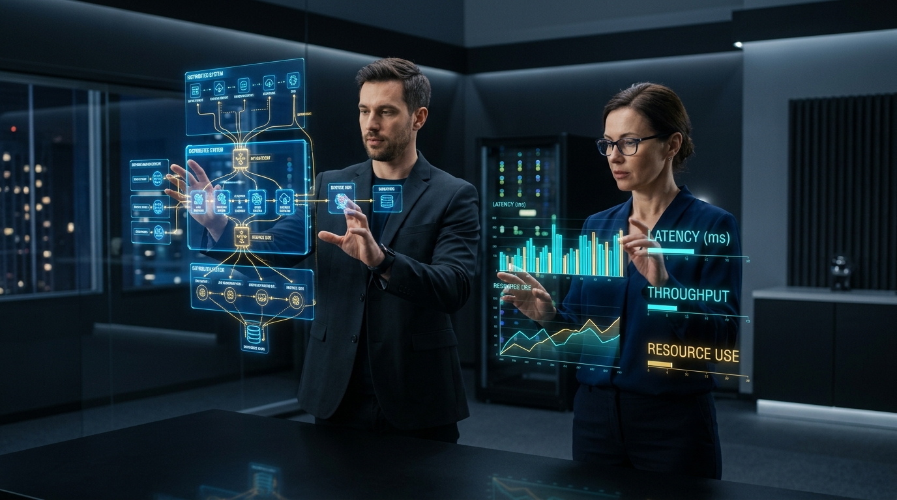
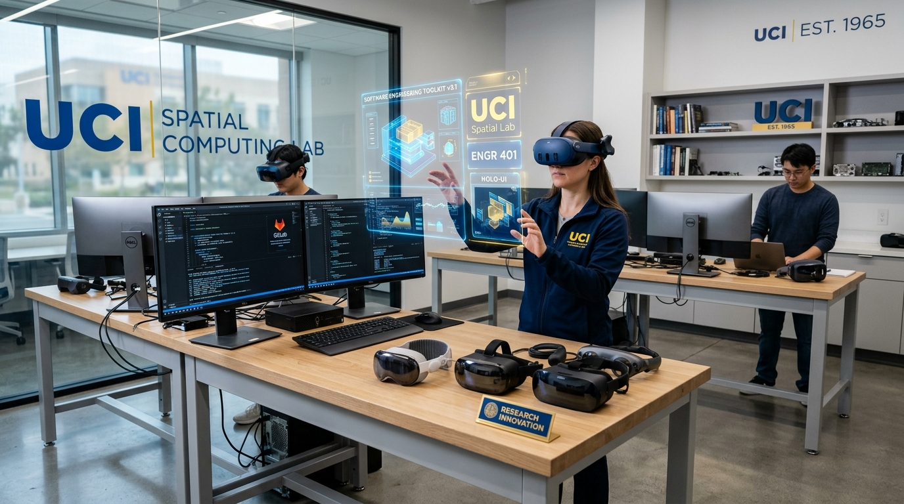

Arquitectura de Software en 3D Espacial
Visualización de diagramas UML, flujo de microservicios y bases de datos relacionales en entornos 3D continuos, mejorando la detección rápida de cuellos de botella.
Transformando el desarrollo de software y la práctica docente universitaria en la Corporación Universitaria Lasallista mediante la inmersión tridimensional, el prototipado holográfico y el aprendizaje interactivo de vanguardia.

Entienda las diferencias clave y cómo convergen la Realidad Virtual (VR), Realidad Aumentada (AR) y Realidad Mixta (MR) en la solución de problemas complejos de ingeniería.
Inmersión sintética 100% digital donde el usuario se aisla del mundo real para interactuar con escenarios 3D complejos.
Superposición de elementos digitales, métricas y gráficos 3D directamente sobre la visión directa del mundo físico real.
Combinación híbrida avanzada donde los objetos físicos y digitales coexisten e interactúan en tiempo real mediante espacialidad.
Cómo integro la computación espacial tanto en la construcción de sistemas de información como en la formación universitaria en la Corporación Universitaria Lasallista.
Arquitectura, Desarrollo & Optimización
Visualización de diagramas UML, flujo de microservicios y bases de datos relacionales en entornos 3D continuos, mejorando la detección rápida de cuellos de botella.
Análisis de tráfico de red y mapas de vulnerabilidades presentados como esferas y nodos holográficos con alertas en tiempo real.
Diseño e implementación de interfaces espaciales basadas en gesticulación, seguimiento ocular e interacciones por voz (Spatial UI/UX).
Pedagogía Inmersiva & Aprendizaje Activo
Los estudiantes simulan la configuración de servidores de alto costo y desarmado de componentes de hardware complejo en un entorno seguro y replicable.
Transformación de estructuras de datos abstractas (árboles binarios, grafos, redes neuronales) en hologramas 3D explorables colaborativamente.
Incremento significativo en el compromiso estudiantil a través de metodologías basadas en retos (Challenge-Based Learning) usando visores de Realidad Mixta.
Seleccione una modalidad para visualizar cómo cambia la interacción de un Ingeniero y Docente en el aula de clase.
Explora la integración práctica de la computación espacial en laboratorios y centros de desarrollo.
Diagnóstico de servidores e inspección de topologías de red en tiempo real mediante capas holográficas.
Estudiantes analizando modelos de simulación 3D de dinámica de sistemas e ingeniería en tiempo real.

Investigación aplicada en nuevos paradigmas de interacción humano-computador para graduandos.